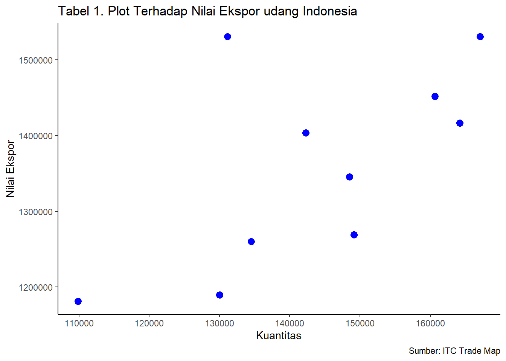

setwd("C:/metopel/tugas")
library(readxl)Analisis Pengaruh Kuantitas terhadap Nilai Ekspor Udang Indonesia dalam 10 Tahun Terakhir (2013-2022)
Metode Penelitian Politeknik APP Jakarta

1 Pendahuluan
1.1 Latar belakang
Indonesia, sebagai negara kepulauan besar, memiliki kekayaan sumber daya alam yang melimpah, khususnya di sektor perikanan. Salah satu komoditas unggulan yang menjadi andalan ekspor Indonesia adalah udang. Dalam dekade terakhir (2013-2022), Indonesia telah mengalami fluktuasi dalam kuantitas dan nilai ekspor udangnya.
Faktor-faktor seperti perubahan iklim, teknologi budidaya, dan dinamika pasar global telah mempengaruhi produksi dan ekspor udang dari Indonesia. Perubahan iklim dapat mempengaruhi siklus hidup udang dan ketersediaan habitatnya. Teknologi budidaya yang semakin maju memungkinkan peningkatan produksi udang. Sementara itu, dinamika pasar global, seperti permintaan dan harga, juga mempengaruhi nilai ekspor.
Namun, masih ada celah pengetahuan tentang bagaimana kuantitas mempengaruhi nilai ekspor udang Indonesia. Oleh karena itu, penelitian ini bertujuan untuk menganalisis data ekspor udang dari Trade Map selama 10 tahun terakhir. Dengan menggunakan metode analisis statistik, penelitian ini akan mengungkap hubungan antara kuantitas dan nilai ekspor udang.
1.2 Ruang lingkup
Penelitian ini dibatasi pada kuantitas dan nilai ekspor udang Indonesia dalam 10 tahun terakhir (2013-2022). Data yang digunakan dalam penelitian ini adalah data yang diperoleh dari Trade Map
1.3 Rumusan masalah
Berdasarkan latar belakang dan ruang lingkup penelitian, maka dapat dirumuskan permasalahan penelitian sebagai berikut:
- Bagaimana pengaruh kuantitas terhadap nilai ekspor udang Indonesia dalam 10 tahun terakhir (2013-2022)?
1.4 Tujuan penelitian
Tujuan dari penelitian ini adalah untuk mengetahui pengaruh kuantitas terhadap nilai ekspor udang Indonesia dalam 10 tahun terakhir (2013-2022).
1.5 manfaat penelitian
Manfaat dari penelitian ini adalah sebagai berikut:
a. Memberikan informasi mengenai pengaruh kuantitas terhadap nilai ekspor udang Indonesia dalam 10 tahun terakhir (2013-2022).
b. Menjadi bahan pertimbangan bagi pemerintah dan pelaku usaha dalam meningkatkan nilai ekspor udang Indonesia.
1.6 Package
Packages yang digunakan dalam laporan ini antara lain sebagai berikut:
2 Studi pustaka
2.1 Daya Saing
Daya saing didefinisikan sebagai kemampuan suatu negara, daerah, atau perusahaan untuk bersaing dalam menghasilkan barang atau jasa, dapat diukur melalui konsep Revealed Comparative Advantage (RCA) dan Export Product Dynamics (EPD).”
Teori RCA mengukur keunggulan komparatif suatu komoditas dalam konteks suatu negara.Nilai RCA diperoleh dengan membandingkan pangsa ekspor komoditas tersebut di suatu negara dengan pangsa ekspor komoditas tersebut di dunia. Nilai RCA yang lebih tinggi dari 1 mengindikasikan bahwa negara tersebut memiliki keunggulan komparatif dalam memproduksi komoditas tersebut.
Teori EPD digunakan untuk memahami posisi pangsa pasar suatu komoditas. Posisi pangsa pasar suatu komoditas dapat diidentifikasi berdasarkan dua indikator utama, yaitu peningkatan pangsa pasar ekspor negara dan peningkatan pangsa pasar produk. Analisis EPD mengidentifikasi empat posisi pangsa pasar berbeda, yaitu:
Rising Star: Komoditas tersebut memiliki keunggulan komparatif dan pangsa pasarnya terus meningkat di pasar global.
Lost Opportunity: Komoditas tersebut memiliki keunggulan komparatif, tetapi pangsa pasarnya di pasar global justru menurun.
Falling Star: Komoditas tersebut tidak memiliki keunggulan komparatif, tetapi pangsa pasarnya di pasar global justru meningkat.
Retreat: Komoditas tersebut tidak memiliki keunggulan komparatif dan pangsa pasarnya di pasar global justru menurun.
2.2 Faktor-Faktor yang Mempengaruhi Ekspor
Ekspor melibatkan segala jenis barang dan jasa yang dijual ke negara lain, termasuk layanan seperti transportasi, permodalan, dan dukungan lainnya yang mendukung proses ekspor. Dinamika ekspor dipicu oleh kelebihan penawaran domestik, di mana harga di dalam negeri cenderung lebih rendah dibandingkan dengan harga di negara lain. Faktor-faktor yang memengaruhi permintaan ekspor, seperti Gross Domestic Product (GDP), nilai tukar riil, dan harga ekspor udang, memberikan dampak signifikan. GDP, sebagai indikator pendapatan rata-rata penduduk suatu negara, mencerminkan tingkat konsumsi dan daya beli terhadap berbagai barang dan jasa. Selain itu, nilai tukar riil mengukur harga mata uang suatu negara terhadap mata uang asing. Dalam konteks ekspor udang, harga ekspor udang dan harga udang di pasar dunia juga memiliki peran krusial dalam menentukan tingkat permintaan ekspor.
2.3 Kerangka Penelitian
Komoditas udang memegang peranan strategis sebagai penyumbang utama devisa negara dalam subsektor perikanan, dan menjadi sumber pendapatan vital bagi para peternak budi daya udang di Indonesia. Kendati demikian, produktivitas udang di negara ini masih menunjukkan tingkat yang relatif rendah jika dibandingkan dengan produsen besar lainnya seperti Vietnam, Thailand, India, dan Equador. Penelitian ini akan melakukan analisis daya saing dengan menerapkan metode Revealed Comparative Advantage (RCA) dan Export Product Dynamic (EPD). Selain itu, eksplorasi faktor-faktor yang memengaruhi volume ekspor udang Indonesia akan dilakukan, dengan mempertimbangkan variabel seperti GDP, nilai tukar riil, harga ekspor, dan harga udang di pasar dunia.
Hipotesis penelitian didasarkan pada asumsi bahwa nilai RCA untuk udang Indonesia diperkirakan lebih dari satu (RCA > 1), menandakan adanya keunggulan komparatif yang signifikan di pasar internasional. Selain itu, diasumsikan bahwa variabel-variabel seperti GDP, nilai tukar riil, harga ekspor, dan harga udang dunia berpotensi memberikan pengaruh positif terhadap volume ekspor udang Indonesia. Penelitian ini bertujuan untuk memberikan pemahaman yang lebih mendalam terkait dengan dinamika ekspor udang Indonesia dan mengidentifikasi potensi perbaikan dalam meningkatkan daya saingnya di pasar global.
3 Metode penelitian
3.1 Data
Penelitian ini menggunakan data sekunder yang meliputi periode tahun 2013 hingga 2022. Data tersebut mencakup volume dan nilai ekspor Udang Indonesia, nilai ekspor total dari Indonesia, nilai ekspor udang dunia, nilai ekspor total dunia, nilai tukar rupiah terhadap dolar AS, dan pertumbuhan ekonomi Indonesia. Sumber data berasal dari trade map.
Untuk menganalisis pengaruh kuantitas terhadap nilai ekspor udang. Indonesia digunakan formula sebagai berikut: Laursen dalam Imelda (2017).
RCA = 𝐗𝒊 𝒊𝒏𝒅𝒐𝒏𝒆𝒔𝒊𝒂 ∑ 𝚾𝒊 𝑰𝒏𝒅𝒐𝒏𝒆𝒔𝒊𝒂 / 𝐗𝒊 𝒘𝒐𝒓𝒍𝒅 ∑ 𝚾𝒊 𝒘𝒐𝒓𝒍𝒅
Dimana:
RCA : Revealed Comparative Advantage untuk komoditi i
X𝑖 𝑖𝑛𝑑𝑜𝑛𝑒𝑠𝑖𝑎 : Nilai Ekspor komoditas dari Indonesia
∑ Χ𝑖 𝐼𝑛𝑑𝑜𝑛𝑒𝑠𝑖𝑎 : Nilai ekspor total dari Indonesia
X𝑖 𝑤𝑜𝑟𝑙𝑑 : Nilai ekspor produk dunia
∑ Χ𝑖 𝑤𝑜𝑟𝑙𝑑 : Nilai ekspor total dunia
Apabila nilai RCA yang diperoleh melebihi angka satu, dapat disimpulkan bahwa Indonesia memiliki keunggulan komparatif dalam komoditas terkait dan memiliki daya saing yang kuat. Sebaliknya, jika nilai RCA kurang dari satu, dapat diinterpretasikan bahwa Indonesia tidak memiliki keunggulan komparatif dalam komoditas tersebut atau memiliki daya saing yang lemah. Tingkat keunggulan komparatif semakin meningkat seiring dengan nilai RCA yang lebih tinggi, mencerminkan daya saing yang semakin kuat (Balassa dalam Ratnawati, 2011). Penelitian ini bertujuan untuk menganalisis pengaruh produksi udang, pertumbuhan ekonomi, dan nilai tukar terhadap volume ekspor udang. Indonesia di pasar internasional. menggunakan metode analisis regresi linier berganda dengan pendekatan model Ordinary Least Square (OLS) atau metode kuadrat terkecil biasa, dengan persamaan sebagai berikut:
𝑳𝒐𝒈𝑽𝒌 = 𝜷𝟎 + 𝜷𝟏𝑳𝒐𝒈𝑷𝑲 + 𝜷𝟐𝑳𝒐𝒈𝑲𝑼𝑹𝑺 + 𝜷𝟑𝑳𝒐𝒈𝑷𝑫𝑩 + 𝒆𝒊
Dimana :
𝐿𝑜𝑔𝑉𝑘 :Volume ekspor udang
𝐿𝑜𝑔𝛽0 : Konstanta
𝐿𝑜𝑔𝑃𝐾 : Budi daya udang Indonesia
𝐿𝑜𝑔𝐾𝑈𝑅𝑆 : Nilai tukar rupiah terhadap dollar AS
𝐿𝑜𝑔𝑃𝐷𝐵 : Pertumbuhan ekonomi Indonesia
𝛽1𝛽2 𝛽3 : Koefisien regresi variabel
𝑃𝐾, 𝑃𝐸,𝐾𝑈𝑅𝑆 𝑒𝑖 : Error term
3.2 Data
| Tahun | Kuantitas (Tons) | Nilai Ekspor (Ribu USD) |
|---|---|---|
| 2013 | 109.857 | 1.181.228 |
| 2014 | 131.150 | 1.530.864 |
| 2015 | 129.995 | 1.189.566 |
| 2016 | 134.495 | 1.260.253 |
| 2017 | 142.300 | 1.403.571 |
| 2018 | 148.508 | 1.345.721 |
| 2019 | 149.160 | 1.269.175 |
| 2020 | 164.177 | 1.416.443 |
| 2021 | 167.122 | 1.530.821 |
| 2022 | 160.681 | 1.451.665 |
Sumber : ITC Trade Map
Penelitian ini menggunakan data hubungan antara variabel independen dan variabel lainnya, antara kuantitas ekspor dengan nilai ekspor udang
3.3 Metode analisis
Metode analisis yang diterapkan dalam penelitian ini adalah metode regresi, yang juga dikenal sebagai Ordinary Least Square (OLS). Metode ini digunakan untuk menentukan parameter yang menggambarkan hubungan antara dua variabel. Regresi, atau OLS, memungkinkan identifikasi dan estimasi parameter yang menghubungkan dua variabel dalam suatu konteks analisis. Di samping itu, analisis univariat juga diterapkan dalam penelitian ini, yang merupakan metode analisis data yang menitikberatkan pada satu variabel dependen (variabel tidak bebas) pada setiap objek yang diamati. Pendekatan ini memungkinkan penelitian untuk menjelajahi karakteristik dan hubungan variabel tunggal dalam konteks penelitian ini.
\[ y_{t}=\beta_0 + \beta_1 x_t+\mu_t \]
di mana \(y_t\) adalah hwy dan \(x_t\) adalah cty.
Keterangan : Y disebut juga variabel dependen X disebut juga variabel independent nilai Y dan X kita dapatkan dari data β0 dan β1 disebut parameter. Nilainya kita dapat dari hasil estimasi komputer. μ disebut juga error term / residual. Dia bersifat independen
4 Pembahasan
4.1 Pembahasan masalah
Berikut adalah hasil dari plot x dan y, dengan x sebagai kuantitas ekpor udang Indonesia dan y sebagai nilai (value) ekspor udang Indonesia. maka didapatkan plot sebagai berikut :
dat<-read_excel("C:/metopel/tugas/DataUdang.xlsx")
library(ggplot2)Warning: package 'ggplot2' was built under R version 4.3.2ggplot(data=dat, aes(x=Kuantitas, y=NilaiEkspor))+
geom_point(color='blue', size=3)+
labs(title="Tabel 1. Plot Terhadap Nilai Ekspor udang Indonesia",
x="Kuantitas",
y="Nilai Ekspor",
caption = "Sumber: ITC Trade Map") +
theme_classic()
#impor dataset
read_excel("C:/metopel/tugas/DataUdang.xlsx")# A tibble: 10 × 3
Tahun Kuantitas NilaiEkspor
<dbl> <dbl> <dbl>
1 2013 109857 1181228
2 2014 131150 1530864
3 2015 129995 1189566
4 2016 134495 1260253
5 2017 142300 1403571
6 2018 148508 1345721
7 2019 149160 1269175
8 2020 164177 1416443
9 2021 167122 1530821
10 2022 160681 14516654.2 Analisis masalah
Hasil pengaruh jumlah ekspor dan jumlah impor terhadap pertumbuhan ekonomi diestimasi menggunakan regresi multivariat. Hasilnya ditunjukkan sebagai berikut:
library(readxl)
dat<-read_excel("C:/metopel/tugas/DataUdang.xlsx")
reg<-lm(data = dat,NilaiEkspor~Kuantitas)
summary(reg)
Call:
lm(formula = NilaiEkspor ~ Kuantitas, data = dat)
Residuals:
Min 1Q Median 3Q Max
-113612 -50236 -27620 43203 230739
Coefficients:
Estimate Std. Error t value Pr(>|t|)
(Intercept) 6.982e+05 2.864e+05 2.438 0.0407 *
Kuantitas 4.590e+00 1.979e+00 2.319 0.0490 *
---
Signif. codes: 0 '***' 0.001 '**' 0.01 '*' 0.05 '.' 0.1 ' ' 1
Residual standard error: 106300 on 8 degrees of freedom
Multiple R-squared: 0.4021, Adjusted R-squared: 0.3274
F-statistic: 5.38 on 1 and 8 DF, p-value: 0.04896Tujuan dari penelitian ini adalah untuk mengevaluasi pengaruh dua variabel, yaitu nilai dan kuantitas udang, terhadap variabel dependen nilai ekspor udang Indonesia. Analisis regresi menghasilkan nilai F sebesar 5.38 dengan probabilitas nilai sebesar 0.04896, menunjukkan bahwa kedua variabel tersebut memiliki dampak signifikan terhadap ekspor udang Indonesia selama periode 2013-2022. Koefisien determinasi (R) sebesar 32.74% mengindikasikan sejauh mana variabel independen berkontribusi terhadap variabel dependen.
Selanjutnya, uji parsial dilakukan untuk menilai signifikansi masing-masing variabel independen terhadap variabel dependen. Hasil analisis menunjukkan bahwa harga udang memiliki pengaruh yang signifikan secara parsial terhadap nilai ekspor udang Indonesia, dengan nilai t-hitung sebesar 2.438 dan probabilitas 0.0407 (< 0,1). kuantitas udang secara parsial berpengaruh secara signifikan dengan nilai t-hitung sebesar 2.319 dan probabilitas 0,0490 (< 0,1). Oleh karena itu, dapat disimpulkan bahwa, dalam rentang waktu 2013-2022, kuantitas udang nilai ekspor udang Indonesia, serta harga udang tidak menunjukkan dampak yang signifikan.
5 Kesimpulan
Berdasarkan hasil penelitian yang telah dilakukan, dapat disimpulkan bahwa kuantitas udang memiliki pengaruh yang signifikan terhadap nilai ekspor udang Indonesia dalam periode 2013-2022. Hal ini ditunjukkan oleh nilai t-hitung sebesar 2,319 dan probabilitas 0,0490 (< 0,1).
Pengaruh kuantitas udang terhadap nilai ekspor udang dapat dijelaskan sebagai berikut. Semakin banyak udang yang diekspor, maka semakin besar pula nilai ekspor udang tersebut. Hal ini disebabkan oleh beberapa faktor, antara lain:
Harga udang yang relatif stabil dalam beberapa tahun terakhir.
Permintaan udang di pasar internasional yang terus meningkat.
Kebijakan pemerintah yang mendukung peningkatan ekspor udang.
Namun, pengaruh kuantitas udang terhadap nilai ekspor udang tidak sebesar pengaruh harga udang. Hal ini ditunjukkan oleh nilai t-hitung sebesar 2,438 dan probabilitas 0,0407 (< 0,1).
Pengaruh harga udang terhadap nilai ekspor udang dapat dijelaskan sebagai berikut. Semakin tinggi harga udang, maka semakin besar pula nilai ekspor udang tersebut. Hal ini disebabkan oleh beberapa faktor, antara lain:
Elastisitas permintaan udang yang relatif inelastis.
Kurangnya persaingan di pasar internasional.
Oleh karena itu, pemerintah dan pelaku usaha perlu terus meningkatkan kuantitas produksi udang untuk meningkatkan nilai ekspor udang Indonesia. Selain itu, pemerintah juga perlu melakukan upaya untuk menjaga harga udang agar tetap stabil atau meningkat.
Berikut adalah beberapa rekomendasi kebijakan yang dapat dilakukan oleh pemerintah dan pelaku usaha untuk meningkatkan nilai ekspor udang Indonesia:
Pemerintah perlu memberikan dukungan kepada para pembudidaya udang untuk meningkatkan produktivitas udang.
Pemerintah perlu memberikan insentif kepada eksportir udang untuk meningkatkan volume ekspor.
Pemerintah perlu melakukan promosi dan pemasaran udang Indonesia di pasar internasional.
Pelaku usaha perlu meningkatkan kualitas dan daya saing udang Indonesia.
Dengan upaya-upaya tersebut, diharapkan nilai ekspor udang Indonesia dapat terus meningkat dan memberikan kontribusi yang lebih besar bagi perekonomian nasional.
6 Referensi
Imelda, R., Nugraheni, I. (2017). Analisis Daya Saing Ekspor Udang Indonesia. Jurnal Ekonomi dan Bisnis Indonesia
ITC Trade Map. (2022). Retrieved January 20, 2024, from https://www.trademap.org/
Sanny, I., et al. (2021). Pengaruh Harga Udang, Nilai Tukar Rupiah, dan Pertumbuhan Ekonomi Terhadap Volume Ekspor Udang Indonesia. Jurnal Ekonomi dan Bisnis Indonesia